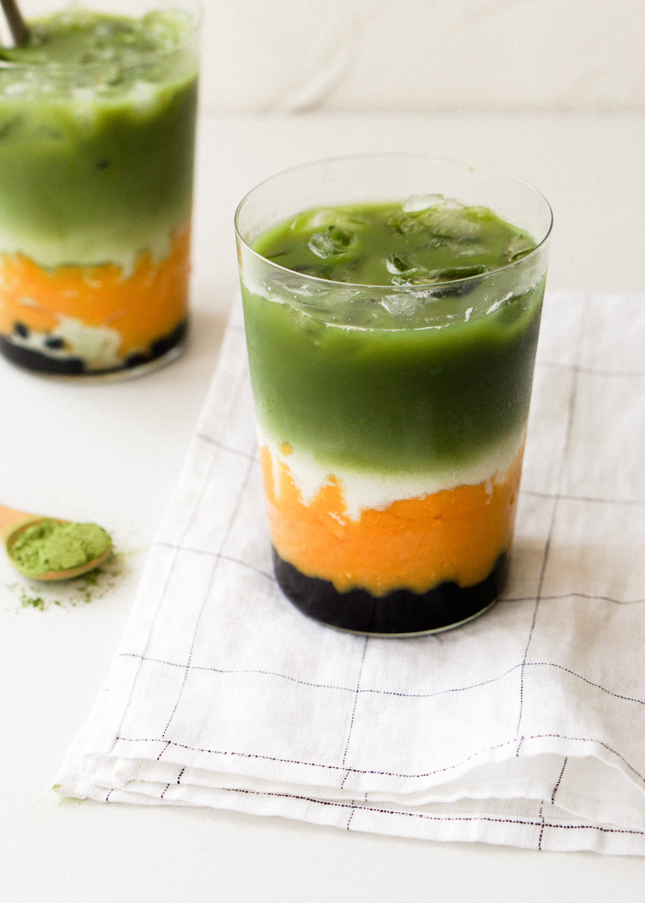

Mango Matcha Boba

Description
If you're anything like me, drinking boba is more than a drink - it's a lifestyle.
One sip of this drink and you'll forget all your worries and remember life is good.
Today, you'll learn how to enjoy one of my favorite drinks, the mango match boba.
Ingredients
Boba Pearls
- 1/2 cup boba tapioca pearls
- 1/2 cup dark brown sugar
- 1/2 cup granulated sugar
- 1/2 cup hot water
Matcha Tea
- 1 1/2 tsp matcha powder
- 3 1/2 tbsp 170 degree F water
Assembly
- 2 cups blended mango
- 1 cup milk of choice
Steps
- Prepare the Boba pearls. In a saucepan, cook the boba following the instructions on the packaging. If using non-instant traditional boba, simmer for 25 min., then turn off heat and let the boba sit in the sauce pan for 25 min and then drain.
- In a heat proof bowl, mix ½ cup hot water, ½ cup dark brown sugar and ½ cup granulated sugar and carefully steep in boiled boba for 30 min.
- Blend the mango. Place the mango in a blender and blend until the mixture is pureed but still slightly chunky.
- Prepare Matcha Tea. Place the matcha powder in a bowl and add 1 tablespoon of the hot water. Then whisk vigorously to make a paste. It should have the consistency of peanut butter. Then add the remaining 2½ tablespoons hot water and whisk until any remaining clumps disappear.
- To Serve: Put the cooked boba, if using, in a glass. Then, pour in the mango puree. Next, layer in the ice and the milk. Lastly, gently pour the matcha over the ice milk, aiming for the ice cubes to keep the layers cleanly separated.
Notes
- Don't over blend the mango! You want the mango puree to have some small chunks of mango to it so that the milk layer doesn't blend into the mango layer.
- Whisk the matcha. When pouring the water into the matcha immediately whisk the matcha with a wooden matcha whisk or electric frother to prevent the matcha from forming chunks.
- Hit the ice! When pouring the matcha layer over the milk, remember to pour the matcha directly on the ice or a spoon above the cup so the matcha layer has a smooth landing and doesn't immediately blend into the milk.